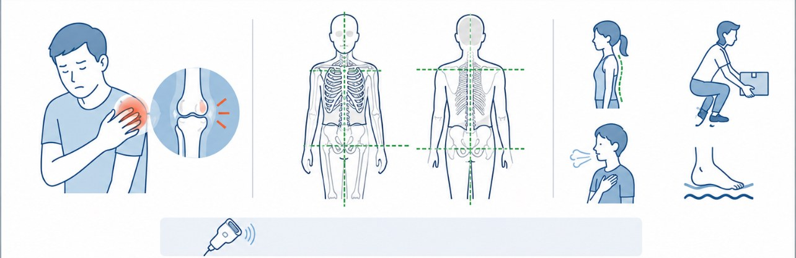

「成長期だから仕方ないですね」
「しばらく運動を休んでください」——。
そう言われて、そのまま様子を見ている方へ。
休めば治る。でも、戻ってくる
オスグッド病（膝）、シーバー病（踵）、シンスプリント（すね）。成長期に多いこれらの痛みは、確かに運動を休めば、いったん軽くなります。
問題はその後です。練習を再開すると、また同じ場所が痛みはじめる。休んで、再開して、また痛くなる——。この繰り返しでご相談に来られる方が、とても多くいらっしゃいます。
休んで治るのは、痛み。
痛みを生んだ理由は、残ったまま。
痛い場所に、原因があるとは限りません
膝が痛いから膝を、踵が痛いから踵を。それだけで解決することもありますが、繰り返しているケースでは、たいていもっと手前に原因があります。
たとえば、踵の痛みで来院された小学生の例では、評価をするとこんな状態がみられました。
- 足の指が丸まりやすい（つかみ癖）
- 足部の機能低下
- 姿勢の崩れ
- 身体全体の筋緊張の増加
この場合、踵は「壊れた場所」であって「原因の場所」ではありません。実際、背骨の機能を整えただけでジャンプ時の痛みが大きく軽減したこともあります。
※ 施術による変化には個人差があります。
「回復できていない身体」という視点
もう一つ、見落とされやすい視点があります。それは身体がきちんと回復できているかです。
膝の痛みで複数の治療院を回った後に来院された中学生の例では、話を聞くうちに次のような状態が分かりました。
- 朝なかなか起きられない
- 寝つきが悪い
- 寝ても疲れが取れない
- イライラしやすい
膝の痛みは確かに強くありました。しかしそれ以上に、身体が十分に回復できない状態に陥っていたと考えられました。この場合、膝だけを施術しても、なかなか前に進みません。

阿部接骨院のアプローチ
成長期の痛みに対して、当院では痛みの部位に加えて次のような視点でアプローチします。
- 構造的な問題の確認／必要に応じてエコーで状態を確認
- 脊柱・骨格の機能調整／全体のバランスを整える
- 足部・足指の再教育／土台から使い方を作り直す
- 回復しやすい身体づくり／睡眠・疲労・自律神経の状態まで含めて
「痛みが出ている場所」と「痛みを生んでいる場所」は違うことがある。だから当院は、必ず身体全体を見てから施術内容を決めています。
痛みが取れたら終わり、ではありません
成長期の痛みは、成長が落ち着けば自然に治まることもあります。ですが、その間に身についた身体の使い方の癖は、そのまま残ります。
当院では、痛みの改善だけでなく、そこから「もっと動ける身体づくり」までを一続きで考えています。施術で痛みが落ち着いた後、体幹教室でケガをしにくい身体づくりへ進んでいくお子さまも多くいらっしゃいます。
まとめ
「成長痛だから仕方ない」と言われても、諦める必要はありません。痛みには理由があり、その理由は多くの場合、評価すれば見つかります。
休んでも戻ってくる痛みでお困りなら、一度ご相談ください。何が起きているのかを、お子さま本人にも分かる言葉でご説明します。